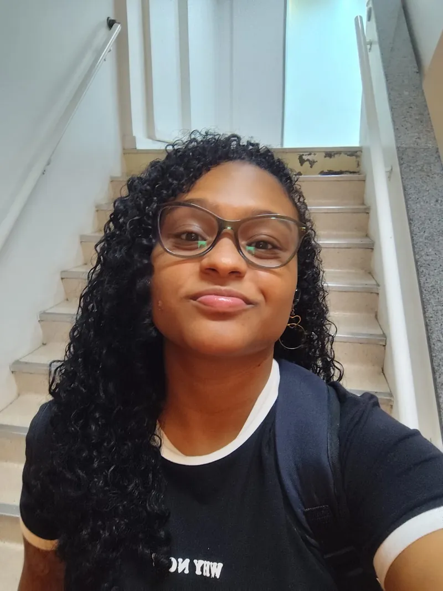
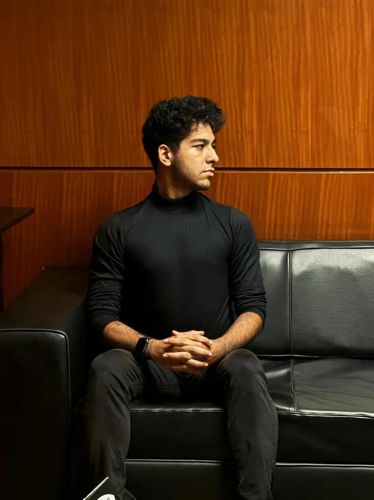

QUEM CONSTRÓI O GSA
Uma ideia que nasceu jovem e quer crescer junto.
Somos um time de jovens que acredita que educação financeira não precisa ser distante, difícil ou cheia de palavras complicadas. O GSA transforma conhecimento em ferramentas para a vida real.
06
pessoas, uma missão
Dar a outros jovens mais clareza para escolher, planejar e construir o próprio futuro financeiro.
AS PESSOAS POR TRÁS
Conheça o Time GSA.
Experiências diferentes, reunidas para criar uma plataforma mais próxima de quem está começando.

01CIÊNCIA DA COMPUTAÇÃOMaria Eduarda
Maria Eduarda
Carneiro dos Santos
Estudante e Jovem Aprendiz do IBOL.

02ENGENHARIA DA COMPUTAÇÃOArthur da Silva
Arthur da Silva
Araujo
CEO da AIR, empresa de tecnologia que cria sites e sistemas.
03
NOVAS PERSPECTIVASGabriel Marques
Gabriel Marques
Bessa
Vestibulando e Jovem Aprendiz da Courtyard by Marriott.
04
APRENDIZADO CONTÍNUOThalys Gomes
Thalys Gomes
de Lima da Silva
Estudante e Jovem Aprendiz do IBOL.
05
ARQUITETURAVitor Hugo
Vitor Hugo
Scaldaferri
Estudante e Jovem Aprendiz da Aço Brasil.
06
NOVAS PERSPECTIVASVinicius Coelho
Vinicius Coelho
Conde
Vestibulando e Jovem Aprendiz da Courtyard by Marriott.
O PRÓXIMO PASSO É SEU
Conhecimento vira liberdade quando entra em movimento.
100%gratuito
Diretosem complicação
Práticopara a vida real